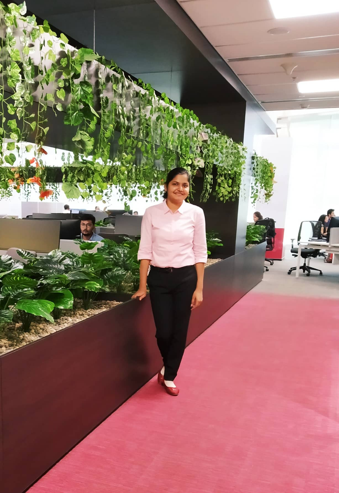

Want a sneak peek of the Investment Banking Sector?
Get all your queries cleared, right here.
Interviewee : Shweta Jaiswal 6 min read

Q. Who are you?
Ans: My name is Shweta Jaiswal and I am pursuing B.Tech in Instrumentation Engineering from
the Department of Electrical Engineering at IIT Kharagpur. I interned during Summers of
2019 at Credit Suisse India Pvt. Ltd. which is a leading multinational investment bank and
financial services company, advising clients in all aspects of finance across the globe. I
worked in Global Markets(GM) IT division of the APAC(Asia-Pacific). The internship was 9
weeks long and started in the mid of May on 13th May.
Q. What is the Selection Procedure?
Ans: Credit Suisse is open for students of all the departments. It comes to hire for 3 different
positions:
1. Technology Intern
2. Risk Management Analyst
3. Finance Liquidity Risk Analyst
It came on DAY 2 for us but before that, it came in late October. As far as I remember, a
single candidate can apply for only one of the positions and all the exams for these positions
are conducted separately. I was the Technology Intern so I will discuss the same. To qualify
for the interview, you need to clear the coding exam.
The test consists of two parts:
1. 25 MCQs- These questions are based on DS and Algo.
2. 5 Coding Questions- 2 of 100 marks each and 3 of 200 marks each.
The interview consists of 3 rounds:
1. Coding round: DS and Algo
2. CV round: Details of your internships and projects on the CV.
3. HR round: Basic stuff regarding your future goals (want to do a job or go for higher
studies)
Q. How to prepare for them?
Ans: For the written test first, GeeksforGeeks for practicing different algorithms and data
structures, InterviewBit for coding practice. Doing these two things are more than enough. If
you are good enough at coding there is no need to prepare for MCQ separately, it has
general questions related to DS and Algo.
For interview:
Coding Round: Be thorough with different Algos and also have proficient knowledge about
the language which you use for coding, about the STL libraries (for C++).
CV Round: Go through the projects thoroughly and make sure you are able to empathize
with the interviewer and make him understand the projects from his perspective.
HR Round: Just be clear with your future goals. There is no point in lying just tell frankly
what you want to do with your life.
Q. What were the Project Details?
Ans: My project was designing a health monitoring system for Apache Kafka. Being a bank, they
didn’t want to use any 3rd party APIs so I had to build everything from scratch. I had to
configure Kafka and then build the utility in JAVA8 which was integrated into their pipeline of
the trade reporting engine for Europe. My util generated and sent the status of different
components of Kafka and also generated alerts in case of failure. Everyone was assigned a
different kind of project and everyone had to work solely on that project.
Q. How was the Company culture?
Ans: The environment here is quite chill and friendly. There are no time restrictions (come and go
whenever comfortable depends on the timing in which zone you are working), the dress
code is semi-formal or smart casuals. People are very easily approachable here, one can
freely talk to any person at any position without any hesitation. They have a smart working
environment where you can sit anywhere in office and work, there is no fixed seating area
for a person (you get smart cards for VMs which can be inserted in any keyboard). All in all,
you grow here in a team, working together with different people at different locations. You
get many treats and outings (depends solely on your team). People are very humble and
generous, not only about the work but they will also guide you about the city, areas to visit
and places suitable for your stay. They also have different coding competitions organized
where they provide many goodies and also they organize many recreational activities. The
workload is very minimal and you have enough time in hand to explore other lots of stuff.
Q. Who should ideally apply for the internship?
Ans: All the technology enthusiasts/ coding geeks/ finance loving people can apply. People who
love finance but want to explore the technology perspective of it are the most suitable ones.
Q. Any advice?
Ans: Credit Suisse is majorly a multinational investment banking and financial service company.
Someone might think that work here majorly is related to finance and in future, if you land at
Credit Suisse, your field completely becomes finance-oriented. However, this is not
completely true. But to understand the background of the work you are doing, you need to
understand the finance behind the technological requirements, thus with time, you tend to
develop more knowledge in finance. So yeah, you might get deeper into finance, but you
won’t get your hands off the technological work you do. If you join Credit Suisse, they have a
special two-year program where you get to choose a different project in a different team of
your interest after a year. The workload is very minimal for these two years, so people get a
lot of time to prepare for their masters as well.
Also, it’s important to keep in mind that not everyone gets the same experience at any place.
What you take out of this journey definitely depends on the firm, the team you are working in
and also on you, how well you adapt yourself to a corporate environment, and how well you
are able to interact and mix up with everyone around you.
I would say that try to get the best out of whatever is present, learn from people around you.
Don’t lose hope, if something doesn’t turn out to be the way you wanted, there is something
much better ahead, just be “PATIENT”.